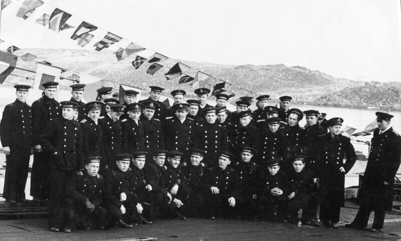

Под Новый год я поместил фото экипажа ПЛ С-276, встречающего 1960 год. На той фотографии не было командира ПЛ – капитан-лейтенанта Юрия Петровича Квятковского. Сегодня, накануне старого Нового года, помещаю снимок экипажа после торжественного подъема флага 1 мая 1960 года. Командир стоит в центре. 
Сейчас Юрию Петровичу 78 лет. Он директор Российского государственного военного историко-культурного центра при Правительстве Российской Федерации, вице-адмирал в отставке, почетный профессор Российской академии естественных наук, академик Академии проблем безопасности, обороны и правопорядка. Подробные сведения о нем можно найти на сайте Правительства РФ и на ряде других сайтов, например, на http://www.biograph.ru/bank/kvyatkovsky.htm. Ушел в отставку он в 1992 году с должности Начальника разведывательного управления – заместителя начальника Главного штаба ВМФ. Военно-морскую разведку страны Юрий Петрович возглавлял не в самое простое для флота время.
Но вернемся в 1960 год. Стать командиром подводной лодки в звании капитан-лейтенанта было не просто. На базе были лодки, которыми командовали капитаны 2 ранга. Но по всем своим качествам Ю.П. Квятковский был Командир, Подводник, Ас. Когда мы стояли в ремонте, о котором я писал в прошлый раз, командир с боевым торпедным расчетом продолжал подготовку на тренажерах Йоканьгской базы. «Близкие» к начальству моряки, торпедные электрики, делились с нами своим мнением о командире: «Хорошо стреляет!» Это была высшая оценка, которую мог заслужить военный моряк-подводник. Такое мнение было не только у моряков нашего корабля. По результатам участия в состязаниях подводных лодок Военно-Морского флота по торпедной стрельбе в 1962 году Ю.П. Квятковский получил специальный переходящий приз Главнокомандующего ВМФ за лучшую торпедную атаку года.
Командир был сдержан, подчеркнуто аккуратен, не фамильярен. Дисциплину поддерживал жестко. Был однажды такой случай. После завершения ремонта двигателей лодка вышла в море на ходовые испытания. Погрузились. Прошли мерную милю. Проверили герметичность отсеков на различных глубинах. Поступила команда всплывать под РДП (режим работы дизеля под водой, позволяющий подзарядить аккумуляторные батареи, оставаясь в подводном положении). Для дизельных подводных лодок это был единственный режим под водой, при котором команде разрешалось курить. Курение было организовано группами по 5 человек в носовой части 5-го – дизельного – отсека. Обычно порядок был такой. Комндир после постановки под РДП заходил к мотористам, выкуривал сигарету, после чего Центральный пост давал команду, разрешающую курить команде. На этот раз командир задерживался и старшина команды мотористов, который нес вахту на 55 боевом посту – управление дизелями – решил закурить по праву хозяина отсека. Только сделал несколько затяжек, как кремальера на переборочной двери поднялась вверх и в отсек вошел командир. Старшина сунул руку с непотушенной сигаретой в карман и попытался ее там затушить. Да попал на целлулоидную расческу. (В наше время пацаны часто поджигали рулончики целлулоидных кинопленок, завернутые в бумагу, делая «дымовую». ) Вот такая «дымовуха» получилась и в кармане старшины. Дым повалил из кармана, старшина бросился в корму отсека, где находился гальюн и залил карман водой. Командир все это время невозмутимо продолжал курить. Закончив, он как обычно дал распоряжение в ЦП, позволяющее курение экипажу, и ушел из 5 отсека. Старшина посчитал, что гроза миновала, что он прощен.
По возвращении в базу было небольшое собрание экипажа с разбором действий во время похода. Командир, после подведения итогов, закончил свое выступление объявлением выговора старшине команды мотористов «За оставление боевого поста.» Курение раньше командира он простил, но побег с поста управления дизелями в сложном режиме РДП – нет.
После 1960 года мне несколько раз приходилось встречаться с Юрием Петровичем. Вспоминали Гремиху, трудные будни того времени. И славный экипаж ПЛ С-276, который можно видеть на любительском фотоснимке тех дней.